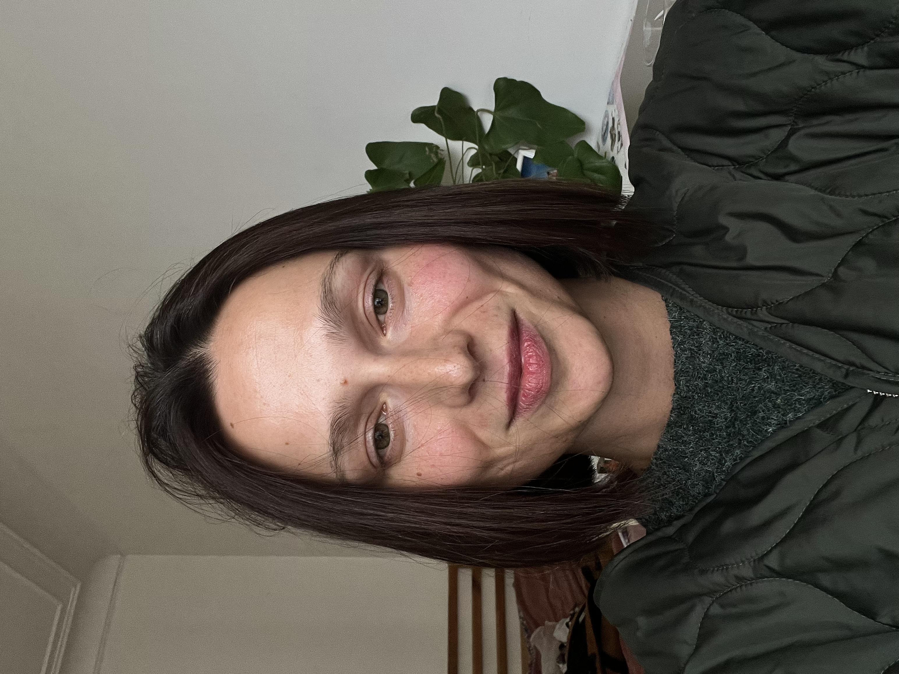

Degtiar
Anastasiia
Développeuse Web Fullstack Junior
Profil Professionnel
Développeuse web fullstack junior, récemment diplômée d’une formation intensive en développement web et web mobile. Curieuse, motivée et rigoureuse, je maîtrise les technologies front-end et back-end et je cherche à rejoindre une équipe pour continuer à progresser à travers un stage ou un premier poste.
Coordonnées
- 0753045414
-
anastasiiadegtiar@
icloud.com - 13 rue Nicolaï, 75012
Compétences techniques
- Langages : HTML5, CSS3, JavaScript, PHP
- Front-end: React, Bootstrap, Sass
- Back-end: Node.js, Express, MongoDB, MySQL
- Outils: Git, GitHub, Figma, VS Code, Postman
Formations
-
Formation Développeur Web et Web Mobile
Studi - mars-octobre 2025 -
Certificat de la piscine
École 42 - juin 2025
Intérêts et loisirs
Passionnée par l’art, la danse et la musique, j’apprécie tout ce qui stimule la créativité. J’aime la nature, voyager, découvrir de nouvelles cultures et apprendre en continu. Curieuse et enthousiaste, je relève volontiers de nouveaux défis.